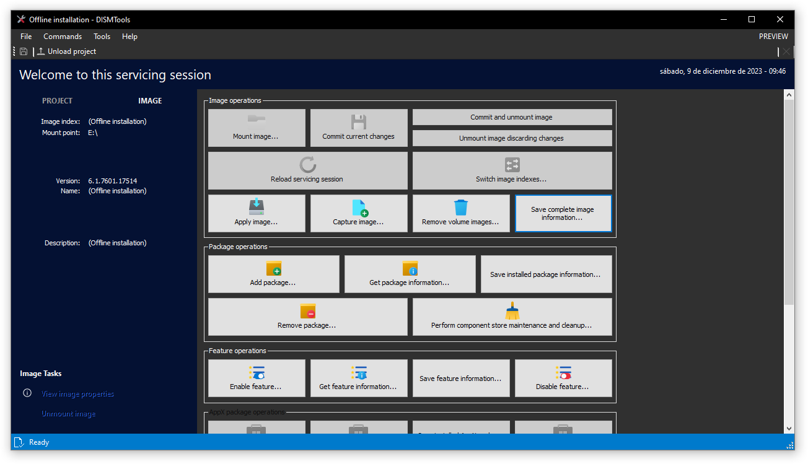
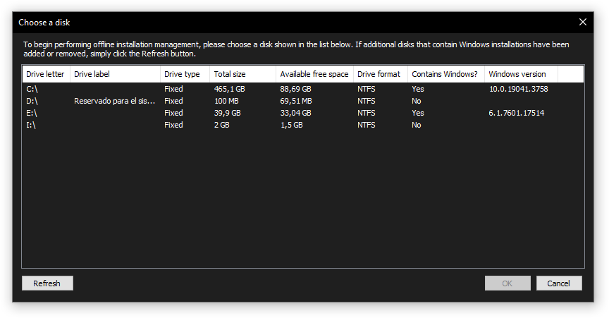

Offline installation management mode
DISMTools 0.4 lets you manage installations in any partition (referred to as an "offline installation") using the same interface you are used to when managing standard projects and Windows images.

Accessing this mode
You can access this mode in 2 ways: by clicking "Manage offline installation" in the home screen or in the File menu.
Then, you have to choose the disk containing the Windows installation you want to manage:

Unsupported drives
You can't perform management of an installation on a drive if it meets at least one criterion out of the following:
- The drive contains an installation of Windows Vista or an earlier version of Windows
- The drive containing the installation is not formatted as NTFS
- The drive containing the installation is mounted as a removable medium
- The drive containing the installation is mounted with read-only privileges
Differences with standard project management
There are some differences between managing an offline installation and a standard project, which will be mentioned below:
- You can't save in the offline installation management mode, because all commit operations are disabled